И из-за образа не может быть собой, когда хочет
Беспонтово им, наверное, но нам этого не понять
В меня не верил весь мир, но успех неизбежен
И из-за образа не может быть собой, когда хочет
Беспонтово им, наверное, но нам этого не понять
В меня не верил весь мир, но успех неизбежен
Музыка интересовала исполнителя с ранних лет. В особенности его привлекал рэп. Первую песню — к слову, на выдуманном языке — он записал в 8 лет вместе с двоюродным братом Егором. Подрастая, Григорий старался пародировать творчество 50 Cent и Eminem, «Касты», «Рыночных отношений» и «Черной экономики», коими заслушивался все детство. Со сценическим псевдонимом Ляхов определился еще в школе. Там — видимо, из-за отцовского прошлого — ему дали приставку OG, что означает Original Gangsta («реальный гангстер»), а слово Buda — первые четыре буквы города, в котором прошло детство рэпера. Преобразовать хобби в работу Ляхову помог Федук. Он принял старого друга в творческое объединение RNDM Crew. Музыкальный дебют OG Buda состоялся в 2017 году. Тогда он выпустил сингл 1000 Freestyle. Первое время Инсаров плотно продвигал композиции товарища. В одном из интервью Федор даже назвал Григория одним из лучших российских рэперов. Через год артист познакомился с Платиной. Удачная встреча вылилась в совместный альбом «Сладких снов». Песня «Это не любовь» стала хитом. В 2019-м музыкант решился на сольную пластинку «ОПГ Сити». Для обложки он вместе с друзьями снялся в образе главарей банд из 90-х годов. В целом карьера OG Buda достаточно последовательна. После карантина в 2021 году исполнитель порадовал фанатов аж двумя полноформатными новинками FREERIO и SEXY DRILL. Артиста всегда искусно подбирает людей для записи совместок. На его счету коллаборации с Егором Кридом, Джиганом, Soda Luv и Mayot, а также другими популярными музыкантами. При этом Григорий не чурается работать с начинающими певцами. В 2022-м Ляхов отправился в турне по России, успев выпустить вторую часть альбома FREERIO. Уже через год он осчастливил рэп-тусовку пластинкой «Скучаю, но работаю».


 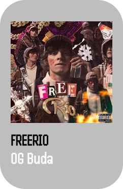
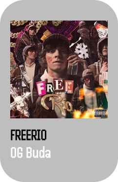

 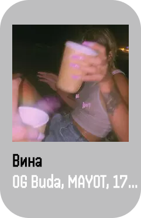
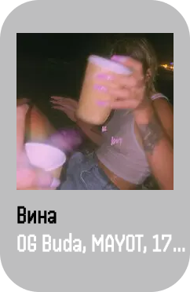

 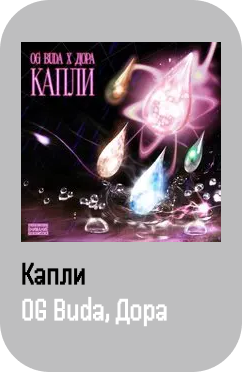
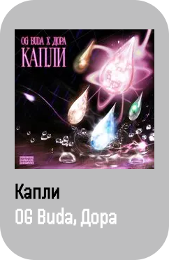

 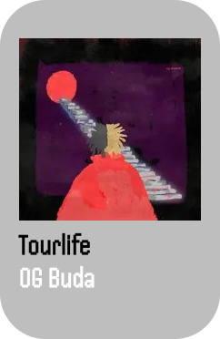
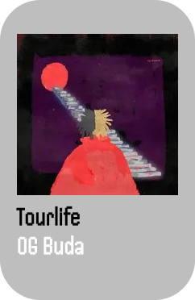
 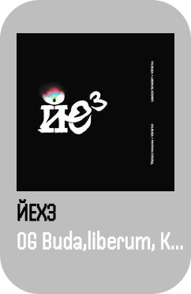
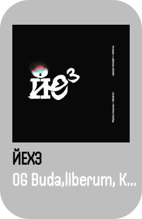
 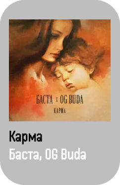
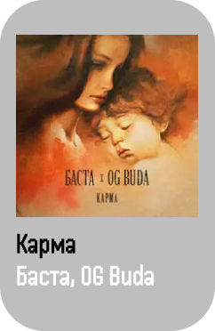
02:25
02:25
 Shok - Baby cute, OG Buda
Shok - Baby cute, OG Buda 02:25
02:25
02:25
OG Buda